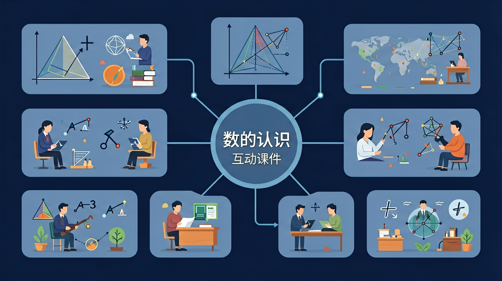

❓ 为什么数字6和9长得这么像，怎么区分它们？
❓ 老师说0表示没有，那为什么温度计上有0度呢？
❓ 我数到100后是什么？是101还是200？
学完这一课，这些问题你都能自信地回答。
🎯 能说出0-100的数字名称及对应数量
🎯 能判断两位数中十位与个位的数值关系
🎯 能分析数字在生活中的实际应用场景
认识1到10的数字，学会数数、写数和比大小

在学习新内容之前，先测测你的基础知识！
Q1：下面哪个数字表示"五"？
Q2：3和7哪个大？
我们在生活中到处都能看到数字（And），但不知道怎么数数和比大小（But），所以我们先认识1到10这些最基本的数，打好数学的地基！（Therefore）
👆 点击数字卡片，听一听、看一看！
拖动滑块，看看是几个点点
完成学习后，用这两道题检验你的掌握程度！
Q1：按从小到大排列：5、2、8、1
Q2：数一数：🌟🌟🌟🌟🌟，一共几颗星？
记忆口诀：1像铅笔细又长，2像鸭子水中游，3像耳朵听声音，4像小旗迎风飘，5像钩子来钓鱼，6像哨子吹一吹，7像镰刀割庄稼，8像麻花扭一扭，9像气球拿绳子，10像铅笔加鸡蛋。助记：用手指数数，配合儿歌记忆。
⚠️ 如果你做错了，看看错在哪里：
如果你不确定6和9哪个哪个，记住：6的圆在下面（像哨子），9的圆在上面（像气球）。还有：6倒过来是9，9倒过来是6，别写反了！
💡 自查方法：把答案代回原题验证，如果算出矛盾就说明中间有错误！
💡 背后的原理
🔍 本质：数字是人类发明的符号，用来计数和比较。0的发明是数学史的里程碑——它表示"什么都没有"，使得位值系统（个十百千）成为可能。
回忆：今天学了哪些关键词和规则？试着说出来。
用自己的话解释今天学的核心概念，不看书能说清楚吗？
用今天的知识解决一个实际问题，或写一个新例子。
把今天的知识与已有知识联系起来：有什么共同点？有什么区别？能不能自己创造一道新题？
先独立作答，再点选项查看对错与错因。
妈妈准备了10个气球，小明已经吹好了5个，还能再吹几个？
下列哪组气球加起来刚好是10个？
第6个吹好的气球是什么颜色？
小明吹了____个红气球和____个蓝气球，一共吹了____个气球。
答案：3,2,5
3+2=5
10可以分成5和____，也可以分成3和____。
答案：5,7
10-5=5；10-3=7
关于数字'5'的正确说法是：
用10个回形针代替气球，尝试不同的分组方式
✅ 用十格阵演示10+3=13
💡 对位值制理解模糊
✅ 描红数字时强调起笔方向
💡 空间方位感未建立
And：学生已会数1-10
But：但分不清数字符号和数量
Therefore：建立数字符号与实物的对应关系
数字就像小标签，每个符号代表不同数量。比如‘3’这个符号，可以表示3个苹果、3支铅笔。看这个例子：老师手里有2颗糖（展示实物），对应的数字就是‘2’。写数字时要像画小鸭子，先画弧线再写竖线。
🌍 放学时妈妈问‘今天得了几朵小红花？’如果你得了5朵，就要找到‘5’这个数字告诉妈妈。
下面哪组物品可以用‘4’表示？
And：已认识1-10数字
But：不知道哪个数字代表更多
Therefore：理解数字大小关系
数字像上楼梯，越往后数量越大。‘5’比‘3’大，就像5层楼比3层楼高（画楼梯图）。记住小口诀：数字排队向右走，右边总是比较大。考考你：小美有6块饼干，小明有4块，谁的多？对啦，6>4！
🌍 玩飞行棋时，骰子掷出‘5’比‘3’走的步数多，就能更快到达终点啦！
哪个数字比7小？
And：会比较数字大小
But：不清楚相邻数字关系
Therefore：掌握数字前后顺序
每个数字都有好邻居，前面少1个，后面多1个。比如‘4’的邻居是‘3’和‘5’（展示数轴）。就像排队领水果，4号前面是3号，后面是5号。特别提醒：1没有前邻居，10没有后邻居哦！
🌍 坐电梯时，如果现在在6楼，按▲就去7楼，按▼就去5楼，这就是数字邻居！
8的前一个邻居是几？
And：熟悉数字基本形态
But：不理解数字组合变化
Therefore：感知数字的组成
数字会变魔术！比如‘5’可以分成‘2’和‘3’（用积木演示）。就像把5块饼干分给两个人，可以分成2+3。反过来，2和3合起来又是5。记住：分合就像掰桔子，总数不变哦！
🌍 妈妈买回6个甜甜圈，早餐吃2个，剩下4个就是6可以分成2和4。
哪组数字合起来是7？